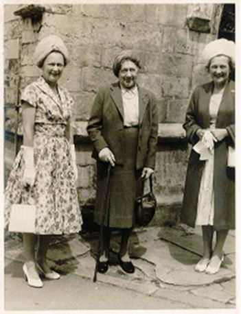
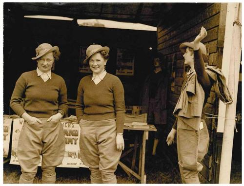
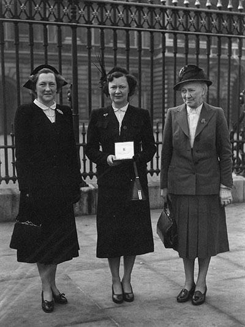
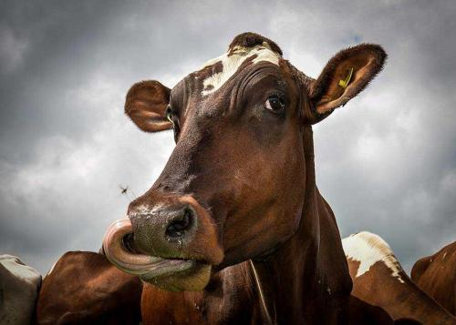
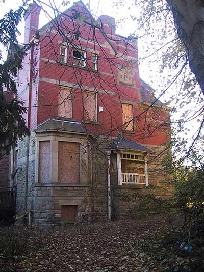
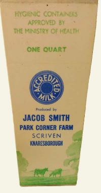
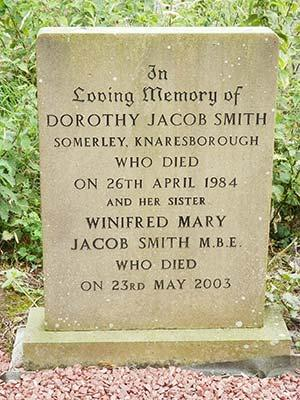

Family introduction

Winifred Jacob Smith MBE entered the world on August 4, 1911, the daughter of Dora and Jacob Smith. Jacob was a farmer, descended from generations who had farmed since 1710 at Humberton between Knaresborough and Boroughbridge. This included the Newby Hall Estate at Givendale, and at Burton Grange, Humberton.
It was traditional for the first son of each succeeding generation of the Smith family to be given the name Jacob. However, the last of the line were daughters (Winifred's sister Dorothy was born the year before her) so their father adopted the name Jacob in their surname so the tradition could live on.
As well as playing an active role in the family's very successful farming business, including being qualified in butter and cheese making, Dora Smith was president of the Knaresborough Women's Institute (WI). Both her daughters took a very active role. All three were strong, practical-minded women who held their close-knit family very dear.
Ms Jacob Smith MBE — credit: Yorkshire Farming Museum
Family album






Jacob Smith family — history timeline
18 May 1910
Dorothy Smith is born.
4 August 1911
Winifred Smith is born.
c.1920 (after WWI)
Jacob Smith and family move to Knaresborough; he takes over Park Corner Farm, Scriven.
1937
At the WI, Winifred socialises with Lady Celia Coates, who asks Winifred to "look after the Women's Land Army if war should break out".
1938
Winifred and Dorothy publish a book of local recipes to raise funds for the parish church, supported by local business advertising.
September 1939
War breaks out; Winifred (28) joins the Women's Land Army (WLA) on the 14th; Dorothy also joins. Winifred is soon selected to attend a royal reception hosted by the Queen.
1939–1945
Winifred serves as organiser of the WLA in North Yorkshire, prioritising the welfare of land girls across hostels and farm billets (around 80). She keeps unique diaries and works from the family home, Somerley, with two typists.
Dec 1941
Jacob Smith dies aged 74. Winifred and Dorothy inherit the family home and run the dairy enterprise at Park Corner Farm, including a herd of award-winning pedigree Ayrshire cattle.
1945–1950
Winifred is appointed organiser of the WLA for all of Yorkshire; she edits the monthly WLA bulletin circulated to hostels and clubs.
28 Feb 1951
Winifred is awarded the MBE for her WLA work and receives the honour from King George VI at Buckingham Palace, accompanied by Dorothy and Dora.
1955–56
After the estate was sold, Winifred and Dorothy purchase the 30 acres of farmland, Scriven Park, adjacent to Park Corner Farm, which they had previously leased from the Slingsbys, to graze their Ayrshire cattle.
2 May 1974
Dora Smith dies, aged 100.
26 April 1984
Dorothy Jacob Smith dies, aged 73.
23 May 2003
Winifred Jacob Smith MBE dies, aged 91. She is buried with her sister and parents at All Saints' Church, Kirby Hill. WLA memorabilia from Somerley is donated to Yorkshire Farming Museum for permanent display.
Legacy
Scriven Park is bequeathed to Harrogate Borough Council for public enjoyment. Winifred's main legacy benefits Yorkshire Cancer Research (c. £10m since her death).
Jan 2008
Jacob Smith Park officially opens to the public.
2010
The family's home, Somerley, is demolished after falling into disrepair; a housing estate now occupies the site (Somerley Lane).
Knaresborough Post archive extracts
— WLA reception by the Queen
Miss Winifred Jacob Smith, younger daughter of Mr and Mrs Jacob Smith, Somerley, was selected as one of the Women's Land Army representatives to attend a reception by the Queen in London.
— Wartime cookery lectures
Miss Dorothy Jacob Smith gives free wartime cookery classes at Scriven WI and the Modern School; over a hundred local housewives attend.
— School potato-picking
Pupils of the Modern School help local farmers with the potato harvest. Mr Jacob Smith praises their efforts.
— Services Club & Canteen
Miss Dorothy Jacob Smith appointed assistant organiser; committee funds support local regiments.
Sources
- Yorkshire Women at War: Story of the Women's Land Army Hostels — Marion Jefferies, Pen & Sword Books Ltd
- Boroughbridge & District Historical Society
- Harrogate Herald
- Knaresborough Post archives